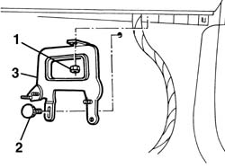
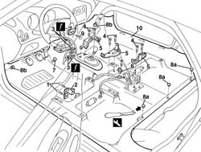
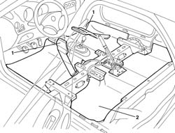

7040L10 cabin floor carpet - r r
- Path
- Procedures > 70 FITTINGS > 7040 BODYSHELL INTERIOR TRIMS AND FITTINGS > 7040L cabin floor covering > 7040L10 cabin floor carpet - r r
- Kind
- repair procedure (removal / refitting; the operation number is the code)
- Applies to
- all engines; all production periods
- Interactive page
- https://sloeber94.github.io/elrnDB-a156/en/#/3238848
Applies to: engines: 1.6 TS , 2.5 V6, 1.9 JTD 8v , 2.4 JTD 10v; all production periods
 Removing
Removing
 Refitting
Refitting1056B82 injection/ignition system e.c.u. (one) - r + r
7040G24 switch for facia compartment light - r+r
7040G20 facia compartment light bulb holder - r+r
7040A14 flap of glove compartment trim element (one) - arrange
1. Undo the nut.
2. Undo the screw cap.
3. Remove the bracket.

Applies to: engines: 1.6 TS , 1.8 TS, 2.5 V6, 1.9 JTD 8v , 2.4 JTD 10v; all production periods
- 7040L44 rear compartment scuff strip - r r (left and right sides)
7040H36 central trim lower element - r r (left and right sides)
7040L40 front compartment scuff strip - r r (left and right sides)
7045A10 l/h or r/h front seat (one) - r+r (left and right sides)
7050A20 one-piece rear seat cushion - r r
7040A65 passenger compartment box lock , one , r r (left and right sides)
7040L37 gear lever plate - r r
3380A44 handbrake/linkage protection - r+r
7040L22 REAR TRIM on TUNNEL -R.R.
5010B46 central air duct to rear seat - arrange
5010C44 air diffuser to rear seat - r+r (left and right sides)
1. Unscrew the bolts
2. Remove the inertia switch protection.
3. Disconnect the Air Bag control unit electrical connection.
 | Name | Connector |
|---|---|---|
3 | Air bag control unit |
| Name | Connector |
|---|---|---|
3 | Air bag control unit |
4. Undo the bracket bolts.
5. Remove the brackets.
6. Remove the handbrake switch
7. Prise out the accelerator pedal end travel block
8. Remove rear retaining buttons (8a) and front retaining buttons (8b) using the special tool.
 | Name | Country |
|---|---|---|
8 | Scraper blade | 1.823.015.000 |
9. Undo the bolt fixing the lower air conditioning bracket.
10. Remove the passenger compartment floor carpet.

Applies to: engines: 1.6 TS , 1.8 TS, 2.5 V6, 1.9 JTD 8v , 2.4 JTD 10v; all production periods
1. Remove both air ducts if necessary.
2. Remove the soundproofing if necessary.

Applies to: all engines; all production periods
Refitting
RemovingCheck that the carpet is undamaged.
If removed. refit the soundproofing.
If removed, refit both air ducts.
Refit the passenger compartment floor carpet.
Tighten the air conditioner lower bracket bolt.
Do up the retaining studs, front and rear.
Fit the accelerator pedal end travel block.
Refit the handbrake switch.
Refit the brackets and bolt in place.
Connect the Air Bag control unit electrical connection.
Refit the inertia switch protection and secure with bolts.
5010C44 air diffuser to rear seat - r+r
5010B46 central air duct to rear seat - arrange
7040L28 tunnel switch panel - r r
3380A44 handbrake/linkage protection - r+r
7040A60 under facia trim - r+r
2125C24 gear lever knob - r + r
5040D22 control (one) of air conditioner control support - arrange
7040A65 passenger compartment box lock , one , r r (left and right sides)
7050A20 one-piece rear seat cushion - r r
7045A10 l/h or r/h front seat (one) - r+r (left and right sides)
7040L40 front compartment scuff strip - r r (left and right sides)
7040H36 central trim lower element - r r (left and right sides)
- 7040L44 rear compartment scuff strip - r r (left and right sides)
Applies to: engines: 1.6 TS , 2.5 V6, 1.9 JTD 8v , 2.4 JTD 10v; all production periods
Refit the bracket and secure using a threaded plug and nut.
7040A14 flap of glove compartment trim element (one) - arrange
7040G20 facia compartment light bulb holder - r+r
Applies to: engines: 1.6 TS , 1.8 TS, 2.5 V6, 1.9 JTD 8v , 2.4 JTD 10v; all production periods
Check component operation after refitting.
Topics linked from this page (24)
- 1056B82 injection/ignition system e.c.u. (one) - r + r
- 2125C24 gear lever knob - r + r
- 3380A44 handbrake/linkage protection - r+r
- 5010B46 central air duct to rear seat - arrange
- 5010C44 air diffuser to rear seat - r+r
- 5040D22 control (one) of air conditioner control support - arrange
- 5570T80 car radio unit - r+r
- 7040A14 flap of glove compartment trim element (one) - arrange
- 7040A31 flap assembly - r r
- 7040A60 under facia trim - r+r
- 7040A65 passenger compartment box lock , one , r r
- 7040G20 facia compartment light bulb holder - r+r
- 7040G24 switch for facia compartment light - r+r
- 7040H36 central trim lower element - r r
- 7040L20 tunnel trim - r r
- 7040L22 REAR TRIM on TUNNEL -R.R.
- 7040L28 tunnel switch panel - r r
- 7040L37 gear lever plate - r r
- 7040L40 front compartment scuff strip - r r
- 7045A10 l/h or r/h front seat (one) - r+r
- 7050A20 one-piece rear seat cushion - r r
- 7065C42 ashtray (one) r+r
- M60A Air bag control unit ( AIR BAGS )
- M60B Air bag control unit ( PRETENSIONERS )